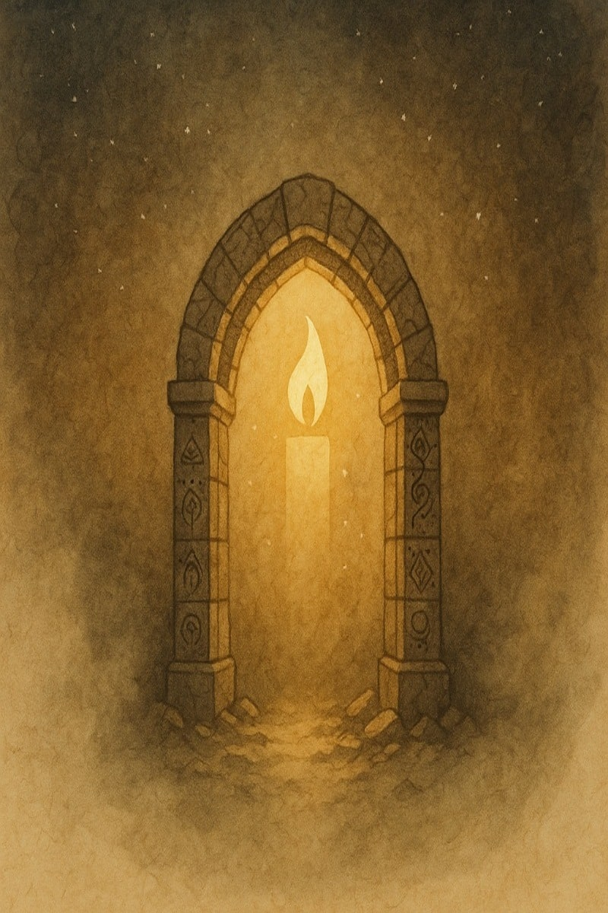
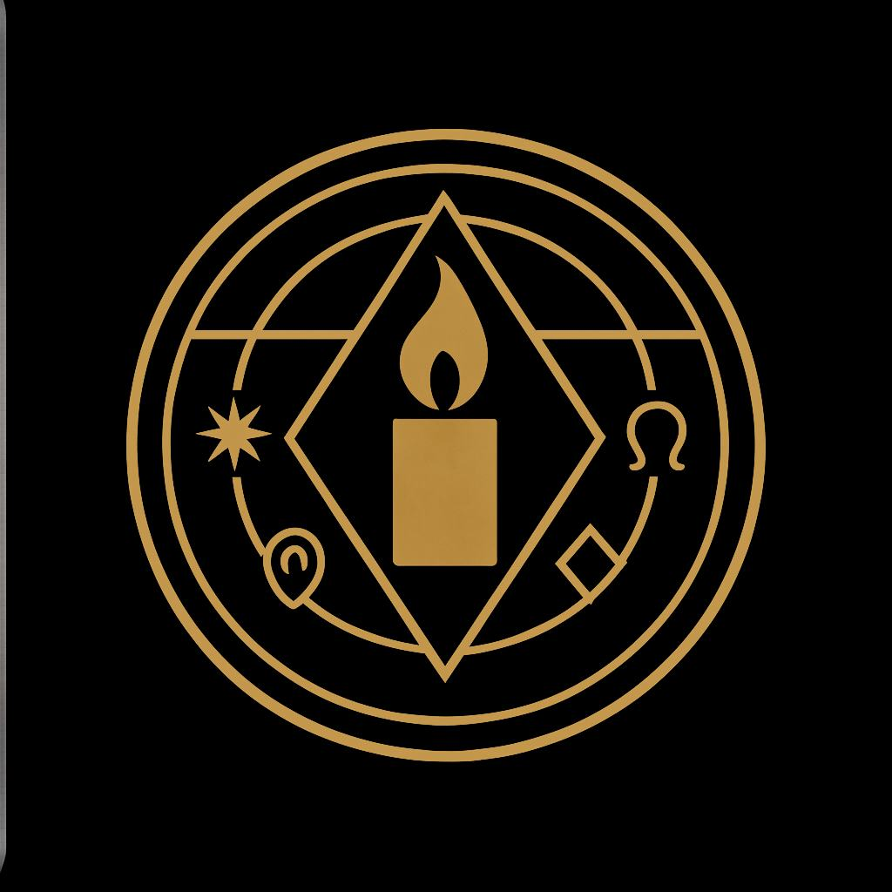
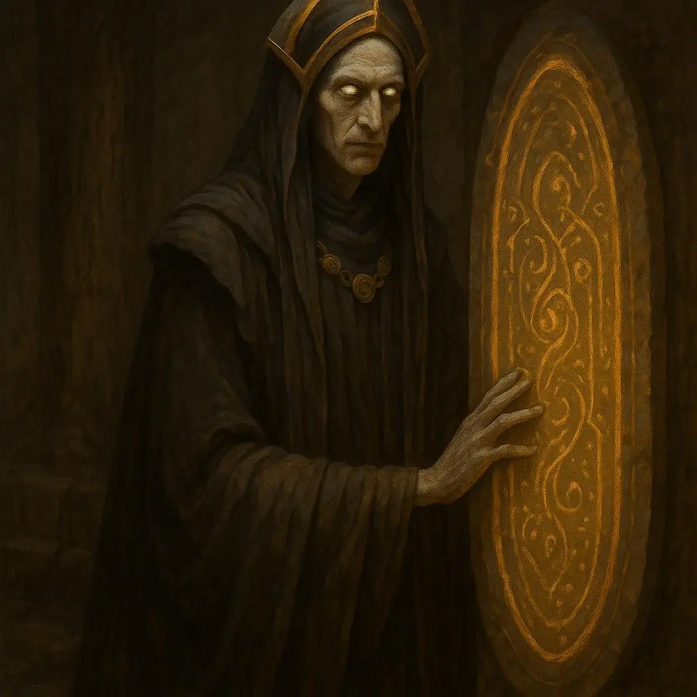
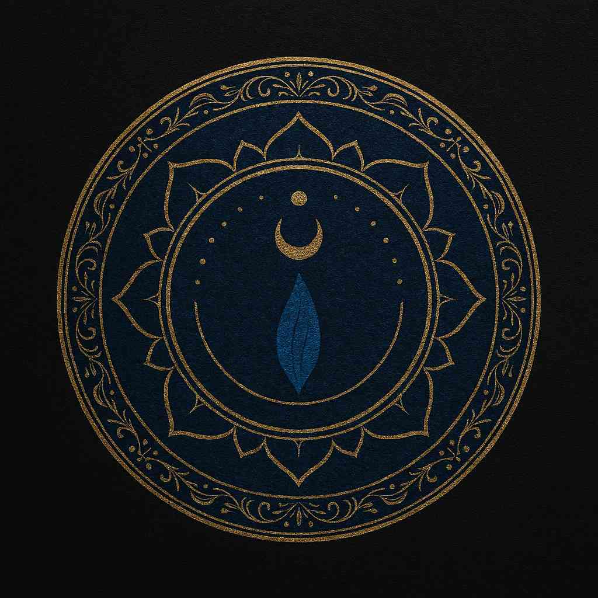
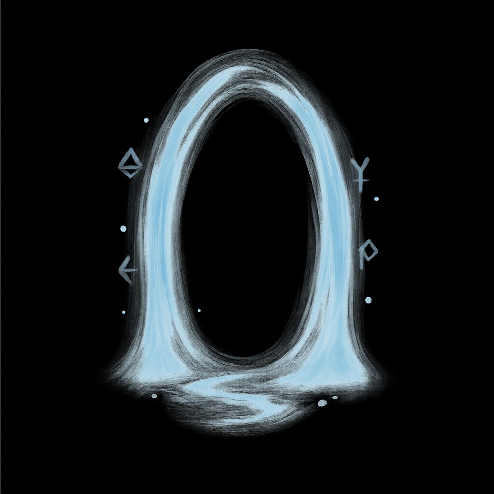

1. Hino Oficial — Voz Feminina
2. Hino Oficial — Voz Masculina
3. Passos do Pacto
4. Pulso dos Véus
5. Véu da Meia-Noite
6. Voz do Portal
7. Eco do Vazio
8. Pacto dos Irmãos
9. Respiração do Silêncio
Fundo cerimonial
Logo do templo
Marca d’água editorial
Guardiã Enaileal
Selo da Transcendência
Portal Azul com Símbolos
Pergaminho com Chama
Livro Branco ao Vento
Livro Escuro ao Vento
Este templo é dedicado à escuta, à vibração e à transcendência. Cada selo sonoro e visual representa uma camada do pacto editorial entre os que caminham sob os véus.